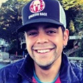
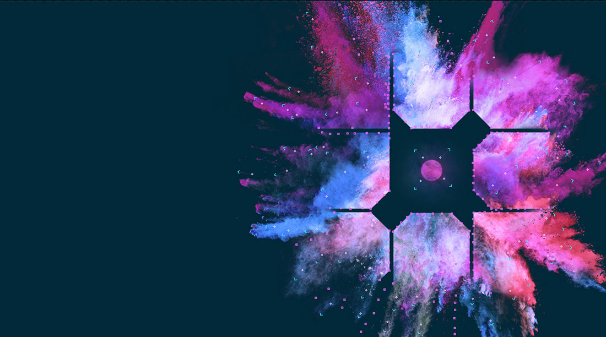
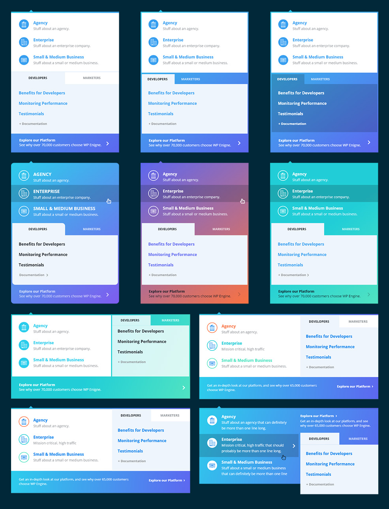
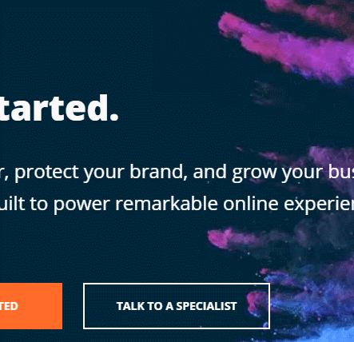
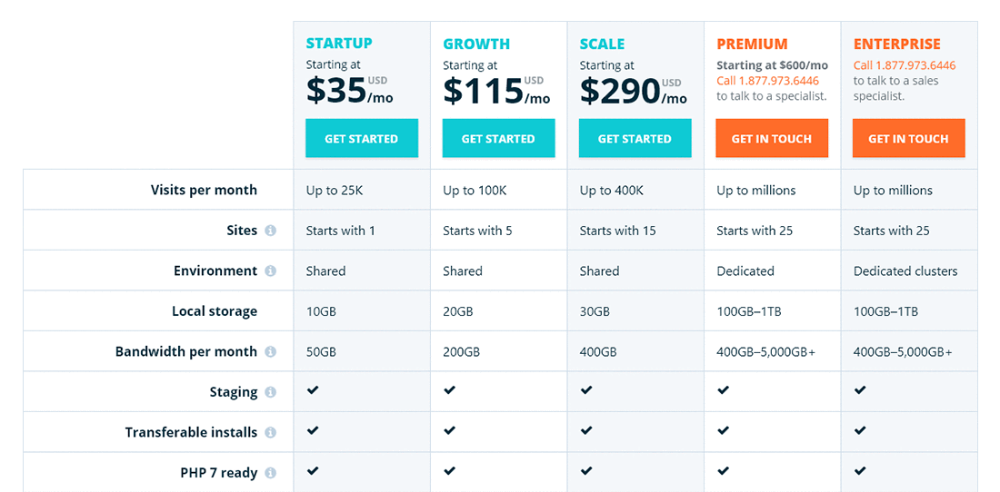
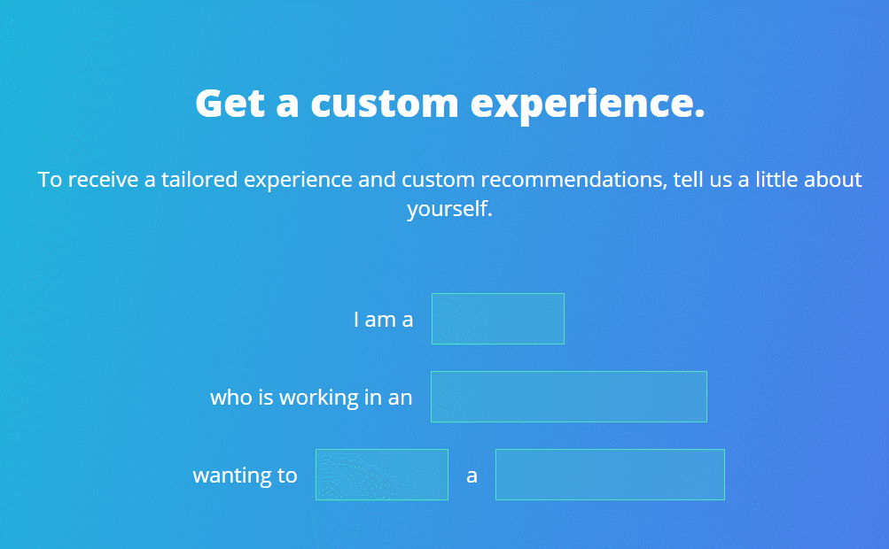
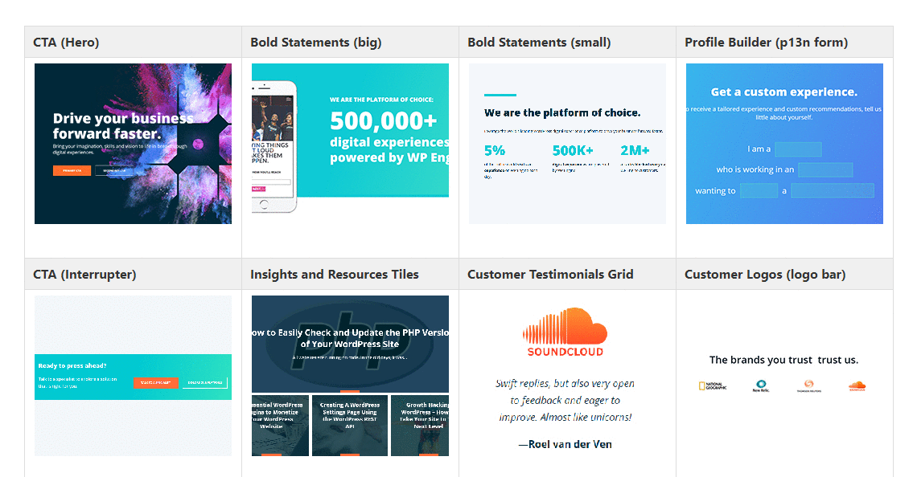
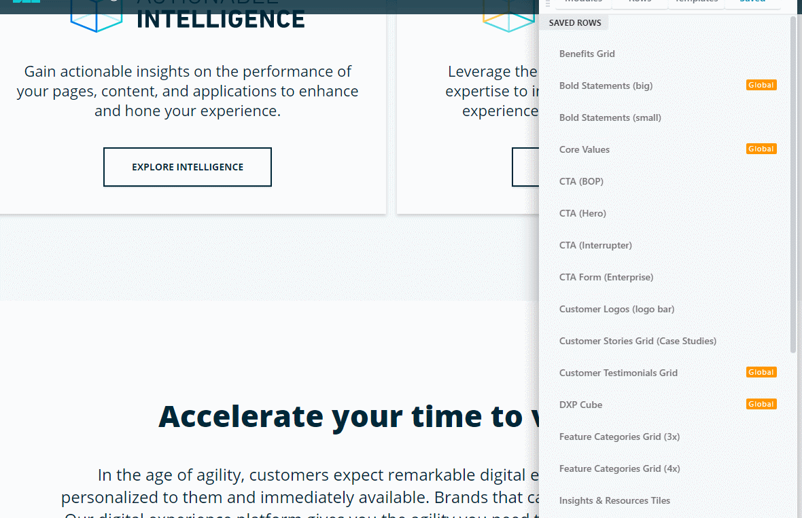
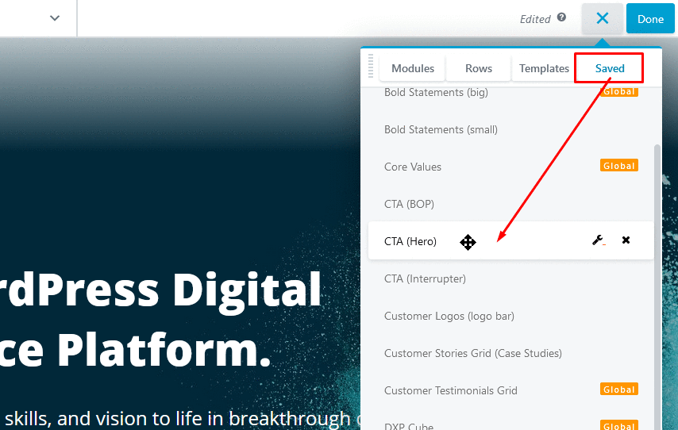

<!DOCTYPE html><html><head><meta charset=UTF-8 /><meta content="IE=edge,chrome=1" http-equiv=X-UA-Compatible /><meta content="width=device-width" name=viewport /><script>var host = "hellojason.net";
if ((host == window.location.host) && (window.location.protocol != "https:"))
  window.location.protocol = "https";</script><meta content="index,follow" name=robots /><link href="../../apple-touch-icon.png?v=Gvm449pRYq" rel=apple-touch-icon sizes=180x180 /><link href="../../favicon-32x32.png?v=Gvm449pRYq" rel=icon sizes=32x32 type="image/png"/><link href="../../favicon-16x16.png?v=Gvm449pRYq" rel=icon sizes=16x16 type="image/png"/><link href="/site.webmanifest?v=Gvm449pRYq" rel=manifest /><link color="#a432f4" href="../../safari-pinned-tab.svg?v=Gvm449pRYq" rel=mask-icon /><link href="../../favicon.ico?v=Gvm449pRYq" rel="shortcut icon"/><meta content="#a432f4" name=msapplication-TileColor /><meta content="#ffffff" name=theme-color /> <title>Hello Jason / WP&nbsp;Engine DXP</title><meta content="Marketing website overhaul for WP Engine." name=description /><link href="../../assets/stylesheets/site-e686322a.css" rel=stylesheet /><link href="https://hellojason.net//projects/wpengine-dxp/" rel=canonical /><script>(function(i,s,o,g,r,a,m){i['GoogleAnalyticsObject']=r;i[r]=i[r]||function(){
(i[r].q=i[r].q||[]).push(arguments)},i[r].l=1*new Date();a=s.createElement(o),
m=s.getElementsByTagName(o)[0];a.async=1;a.src=g;m.parentNode.insertBefore(a,m)
})(window,document,'script','//www.google-analytics.com/analytics.js','ga');

ga('create', 'UA-48926813-1', 'auto');
ga('send', 'pageview');
ga('set', 'anonymizeIp', true);</script></head><body class="projects projects_wpengine-dxp projects_wpengine-dxp_index case-study"></body><header class=banner role=banner><div id=primary-navigation role=navigation><div class=navbar-header><a class=logo href="/" title="Hello Jason Portfolio"><svg id=hellojason-logo xmlns="http://www.w3.org/2000/svg" width="0.56in" height="0.56in" viewBox="0 0 40.6 40.6"><defs><style>.cls-1{fill:#fbac2d;}</style></defs><title>hello-jason-logo</title><path class=cls-1 d="M9.3,13.1a4.11,4.11,0,0,1,2.8-.7H29.9a4.42,4.42,0,0,1,2.9.7,3.39,3.39,0,0,1,.8,2.5v0.5H28.4A1.43,1.43,0,0,0,27,17.5v0.9q3.75,0,4.8.9c0.7,0.6.9,2.9,0.9,2.9a28.1,28.1,0,0,1,.1,2.9V29a1.43,1.43,0,0,1-1.4,1.4h-8A1.43,1.43,0,0,1,22,29V28.1c0-1.9.2-3.1,0.7-3.6a3.37,3.37,0,0,1,1.7-.6,1.42,1.42,0,0,0,1.4-1.2,1.33,1.33,0,0,0-1.4-1.1H16.9A1.43,1.43,0,0,0,15.5,23v0.7c1.6,0,2.7.2,3.2,0.7a5.14,5.14,0,0,1,.6,2.3,23.48,23.48,0,0,1,.1,2.6A1.33,1.33,0,0,1,18,30.4H11A1.43,1.43,0,0,1,9.6,29V23.5c0-2.2.3-3.5,0.8-4.1a4.15,4.15,0,0,1,1.8-.7,15.26,15.26,0,0,1,1.8-.1,1.23,1.23,0,0,0,.4-1.2A1.33,1.33,0,0,0,13,16.2H8.5V15.5a2.92,2.92,0,0,1,.8-2.4" transform="translate(-0.7 -0.7)"/><path class=cls-1 d="M21,3.4A17.6,17.6,0,1,1,3.4,21,17.63,17.63,0,0,1,21,3.4m0-2.7A20.3,20.3,0,1,0,41.3,21,20.31,20.31,0,0,0,21,.7h0Z" transform="translate(-0.7 -0.7)"/></svg><span class=tagline>Hello, I'm Jason.</span></a></div><div id=primary-container><ul class=nav><li class=nav-item-blog><a href='/'>Blog</a></li><li class=nav-item-projects><a href='/projects/'>Projects</a></li><li class=nav-item-about><a href='/about/'>About</a></li></ul></div></div></header></html><main role=main><section class=hero><div class=content><h1><span>The product demo for WordPress &amp; WP&nbsp;Engine</span></h1><p class=categories><span>Design Lead</span></p><p>WP&nbsp;Engine's new website should serve as the product demo for its own platform and for WordPress, showcasing integrations with 3rd party sales and marketing systems, extendability of the framework, robust content analytics, and ease-of-use for the humans who maintain it all.</p></div></section><section class=business-case><div class=content><h2 class=section__title>Business case</h2><p>WP&nbsp;Engine has positioned itself as the first WordPress Digital Experience Platform (DXP), soon before Gartner released its first <a href="https://martechtoday.com/gartner-releases-first-magic-quadrant-report-digital-experience-platforms-209846">magic quadrant for DXP</a> and inline with announcing a <a href="https://wpengine.com/blog/milestone-announcement/">major fundraising event</a> from Silver Lake. This tilts the company upmarket with an enterprise-focused product offering, and entry-level tiers for <abbr title="small and medium businesses">SMBs</abbr> and agencies to set themselves up for growth and scale.</p><p>WP&nbsp;Engine is a challenger in the Adobe Experience Manager, Sitecore, and Acquia space, and it's the only one built on an open-source framework with 37% market share of all websites on the internet&mdash;WordPress. Our new website should be the premier case study of the WP&nbsp;Engine platform, punching through dated misconceptions that WordPress is a meek blogging tool. It should demonstrate a cohesive execution of art and science.</p></div></section><section class="callout odd"><div class=content><h2 class=section__title>The team</h2><div class=collaborators><figure class=vcard><figcaption><span class=name>Mary Ellen Dugan</span><span class=role>Chief Marketing Officer</span></figcaption></figure><figure class=vcard><figcaption><span class=name>David Vogelpohl</span><span class=role>VP, Web Strategy</span></figcaption></figure><figure class=vcard><figcaption><span class=name>David Fossas</span><span class=role>Sr. Director, Brand</span></figcaption></figure><figure class=vcard><figcaption><span class=name>Alan Garcia</span><span class=role>Digital Mktg Mgr</span></figcaption></figure><figure class=vcard><figcaption><span class=name>Ryan Hoover</span><span class=role>Developer, Lead</span></figcaption></figure><figure class=vcard><figcaption><span class=name>Zack Rothauser</span><span class=role>Developer</span></figcaption></figure><figure class=vcard><figcaption><span class=name>Christopher Garza</span><span class=role>Developer</span></figcaption></figure><figure class=vcard><figcaption><span class=name>Killian Hagen</span><span class=role>Copywriter</span></figcaption></figure><figure class=vcard><figcaption><span class=name>Elana Weinberg</span><span class=role>Assoc. Creative Director</span></figcaption></figure><figure class=vcard><figcaption><span class=name>Jason Cross</span><span class=role>Designer, Lead</span></figcaption></figure><figure class=vcard><figcaption><span class=name>Stacey Lane</span><span class=role>Designer</span></figcaption></figure><figure class=vcard><figcaption><span class=name>Kat Cox</span><span class=role>Copywriter</span></figcaption></figure></div></div></section><section class=ideation-planning><div class=content><h2 class=section__title>Ideation and planning</h2><p>I flew to Salt Lake City with our creative leaders to meet and brainstorm with <a href="https://www.axis41.com/">Axis41</a>, the agency chosen to help blueprint a meaningful site structure and general user experience. This allowed me to have a deep understanding of our direction and vision, and it established our sitemap and visual style. I then lead internal efforts to explore and expand on the concepts, which ultimately produced a robust design component system (discussed later) that we build pages with.</p></div></section><section class="integrations odd"><div class=content><h2 class=section__title>Integrations with marketing and sales systems</h2><ol class=big-list><li><span class=number>»</span> <span class=text>A custom form builder plugin connects WordPress forms to <strong>HubSpot</strong> via their API. Automated workflows on HubSpot's side take over and route messages accordingly, such as into <strong>Salesforce</strong> or nurture campaigns.</span></li><li><span class=number>»</span> <span class=text>We heavily customized how <strong>LiveChat</strong> integrates into the user's sales experience throughout the site.</span></li><li><span class=number>»</span> <span class=text>Sales phone number, nearest office location, and customer logos are localized depending on where in the world the user is located, leveraging <strong>GeoIP</strong> from WP&nbsp;Engine's platform.</span></li><li><span class=number>»</span> <span class=text>Deep integration with an external Partner program management tool, <strong>Allbound</strong>, to serve as a recruiting portal for agencies to join as well as surface partners to our customers who are looking for trusted agencies to hire.</span></li><li><span class=number>»</span> <span class=text>Articles from <a href="https://velocitize.com" rel=nofollow>Velocitize</a> and <a href="https://torquemag.io" rel=nofollow>Torque</a> are pulled in via the WordPress REST API.</span></li></ol></div></section><section class=my-notable-parts><div class=content><p>Some of the key components I worked on&hellip;</p></div></section><section class=powder-burst><div class=content><h2 class=section__title>Powder burst graphic and animation</h2><p>The new website needed a <em>wow factor</em>, something mesmerizing and beautiful. We explored all sorts of ideas, from particle effects in <a href="https://threejs.org/" rel=nofollow>three.js</a> to the playfulness of how <a href="https://max.adobe.com/" rel=nofollow>Adobe Max</a> recreates their logo in dry ice and ink experiments.</p><p>But since time and budget were a factor, I explored an inexpensive piece of software called <a href="https://plotaverse.com/" rel=nofollow>Plotagraph</a>, which lets you give life to still images. Most of the example artwork on their site is painfully overdone, but I was able to apply it to a powder-burst version of the WP&nbsp;Engine logomark that I created to give it some feeling of awe.</p><div class="powder-container media-responsive"><video autoplay=1 class="powder-video media-responsive" loop=1 playsinline=1 poster="../../assets/videos/logo-poof.jpg" preload=none><source src="../../assets/videos/logo-poof.mp4" type="video/mp4"/><source src="../../assets/videos/logo-poof.webm" type="video/webm"/></video></div><p>After launch, the average time of existing customers who visit the home page to log into their account increased a bit, likely meaning that they stopped to gaze at my creation; UX speed bump, but selfishly rewarding.</p></div></section><section class="primary-navigation odd"><div class=content><h2 class=section__title>Primary navigation</h2><p>My typical workflow in the past was to design the navigation first, which would inspire the rest of the process. But this project was different; the navigation was one of the last components I worked on.</p><p>Although we mostly finalized our navigation's structure months earlier, I had to push those wireframes into something that felt complete, something representative of the brand. This proved challenging. It required lots of iterations with top stakeholders.</p></div></section><section class=sales-chat><div class=content><h2 class=section__title>Sales chat experience</h2><p>Live chat on any website is often a high-priority lead generation pipeline for that business. I had been heavily involved in <a href="/projects/wpengine-livechat/">sales chat A/B testing</a> on wpengine.com, so I explored how to integrate that channel into the new website experience.</p><p>I built onto past learnings from our testing and made the live chat experience noticeable and engaging. The chat pops into view a few seconds after the page has fully loaded, so you're more likely to notice it, accompanied by a quick bloop sound. We randomize photos of actual WP&nbsp;Engine sales employees, and a red notification bubble indicates you have an unread message.</p><p>A variant of this experience can be applied to buttons. Clicking the button will reveal the same employee's face from above, but we build anticipation with an animation mimicking typing, followed by a nice message. Clicking <em>reply</em> triggers a chat with someone in sales, so the experience is natural for potential customers.</p><p>I designed the entire situation to trigger typical human impulses, hopefully in a respectful way, in order to increase engagement. It has been effective.</p></div></section><section class="pricing-components odd"><div class=content><h2 class=section__title>Pricing components</h2><p>These components are often how users convert into customers on the website. They are a big deal. Like with sales chat, I had been heavily involved in previous explorations to increase unassisted signups and <abbr title="average revenue per customer">ARPU</abbr> through these pricing components, so I applied past lessons here to minimize conversion loss.</p></div></section><section class=profile-builder><div class=content><h2 class=section__title>Profile builder form</h2><p>The profile builder form is the first outward-facing component of our personalization engine. Users who complete the form are rewarded with customized content and messaging throughout the website. I worked with a developer to make it enticing and fun, and we are seeing user engagement. This initial version of the form will be improved over time.</p></div></section><section class="component-system odd"><div class=content><h2 class=section__title>Component-based design system</h2><p>We created a series of <em>web components</em> for different types of content, which complement each other when used in various configurations. Our developers integrated this component system into a page builder plugin for WordPress called <a href="https://www.wpbeaverbuilder.com/" rel=nofollow>Beaver Builder</a>. This is the foundation that allows us to quickly build new web pages that are on brand.</p><h3>How new pages are built</h3><p>New pages often begin with the stakeholder and copywriter hashing out the overall story. The copywriter then fits that story into our design components within a Google Doc. Once done, the copywriter hands over that Google Doc with their content broken down into the design component sections. A designer then builds the page directly in WordPress by dragging in the Beaver Builder components and applying the text as needed. Often no need for developer intervention at all.</p><ol class=big-list><li><span class=number>»</span> <span class=text>Copywriter &rarr; Designer &rarr; Stakeholder approval &rarr; <strong>Published</strong></span></li></ol><h3>Improving the process</h3><p>To improve this process further, I have begun training other teams how to build their own pages. I documented our design system with pictures, step-by-step guides, and pro-tips for finding approved images and so forth. We created custom WordPress user roles so they can log in and see only what they need to see.</p><p>Other teams are beginning to build their own pages and submit them for review. A designer reviews their page and publishes it for them. This shift in workload results in pages getting out faster, and it allows my team to make the page builder tools more friendly and to create more engaging experiences elsewhere on the site.</p></div></section><section class=what-i-learned><div class=content><h2 class=section__title>What I learned</h2><p>I had never collaborated with so many professionals on a project before. The experience was humbling, exciting, and even frustrating at times. I learned to break out of the designer's mindset that cherishes pixels, and instead speak for the user during early phases and throughout the entire production. I found a place at the table that allowed me to oversee and execute the collision of business objectives and user delight.</p><p>I'm happy with the project. And while I cannot detail ongoing marketing efforts for the website, it is of course an ever-evolving thing.</p></div></section><section class=awards><div class=content><h2 class=section__title>Awards</h2><ol class=big-list><li> <span class=number>🏆</span> <span class=text>2019 dotCOMM Awards, Gold - B2B Website</span></li><li> <span class=number>🏆</span> <span class=text>2018 WebAward - Outstanding Website</span></li></ol></div></section><section class="check-it-out odd"><div class=content><h2 class=section__title>Check it out</h2><div class=col-md-6><a class=btn href="https://wpengine.com/">Visit the website</a></div><div class=col-md-6><a class=btn href="https://wpengine.com/wp-engine-case-study/">Official case study</a></div></div></section></main><footer id=footer></footer><script src="//assets.codepen.io/assets/embed/ei.js" async=true></script>